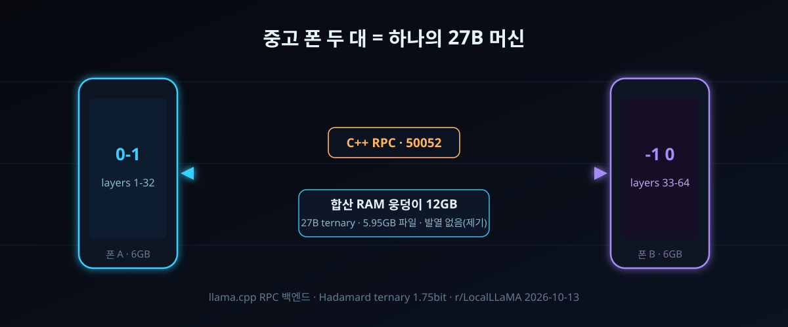

10/13 — 한 폰에 안 들어가던 27B, 중고 폰 두 대를 붙였더니 발열 없이 돌아갔다

세 줄 요약. ① 10월 13일 새벽 r/LocalLLaMA에 "낡은 안드로이드 폰 두 대를 클러스터링해 27B 모델을 locally 돌렸다"는 글이 붙었다. 제기가 내건 간판은 속도가 아니라 두 가지 기법이다 — C++ RPC로 층을 쪼개고, Hadamard 회전을 깐 터너리(3값) 연산. 거기에 "발열 스로틀링은 없었다"는 한 줄이 붙는다. ② 이 트릭이 먹히는 이유는 수학보다 배치가 먼저다. 터너리 양자화라면 27B는 5~7GB짜리 파일 하나가 되고, 남는 문제는 계산이 아니라 "그 파일을 두 대의 RAM에 어떻게 나눠 담나"로 줄어든다. ③ 그 배치는 이미 정석이 돼 있다. ggml-org/llama.cpp(스타 130,977)의 RPC 백엔드가 바로 이 모양의 클러스터라고 자기 문서에 적어 놨다. 제기의 'C++ RPC'와 이름이 같은 물건이다.
원글은 아직 게시 12시간째, 스펙시트도 코드 저장소도 없다. 그래서 오늘은 제기가 확정한 사실과 우리가 아는 사실이 어디에서 갈라지는지를 먼저 선긋기로 정리한다. 그 다음, llama.cpp 공식 문서와 목격 사례로만 재구성한 '따라 하기' 절차, 그리고 마지막으로 이 실험이 진정으로 노려야 할 상대(7만원대 상용 폰)까지 내려간다.
30초 요약
| 항목 | 내용 |
|---|---|
| 무슨 일 | 2026-10-13(한국 시각) r/LocalLLaMA 게시물. 구형 안드로이드 폰 2대로 27B급 LLM을 구동했다고 주장. 열쇠는 ① C++ RPC 기반 층 분할 ② Hadamard 터너리 연산 — 부수 성과로 '과열 없음'을 보고 |
| 왜 폰 두 개인가 | 단일 폰은 OS·백그라운드와 RAM 한 웅덩이를 나눠 쓴다. 27B를 8비트 이하로 눌러도 컨텍스트까지 얹으면 12GB급. 6~8GB 폰 한 대의 여유 메모리에 안 들어가는 '용량 문제'인데, 두 대를 묶면 그 제약이 분산시스템 문제로 바뀐다 |
| 왜 터너리인가 | 가중치가 −1/0/+1 셋뿐인 세계에서는 곱셈이 없다시피 하고 병목이 메모리 읽기 하나로 남는다. 1.75비트/가중치면 27B가 5.95GB(PQ2_0 기준 7.21GB). "전체 모델을 GPU에 다 싣는다"는 로컬 AI의 제1명제가 파일 6GB짜리로 축소 |
| 어떤 기계로? | llama.cpp의 ggml-rpc-server를 각 폰에 띄우고( Termux 등으로), 메인 단 한 곳에서 --rpc 10.0.0.21:50052,10.0.0.22:50052 로 지목. 층이 두 RAM 웅덩이에 나눠 실리고, 워커 간 통신은 1회 왕복만 나가는 파이프라인 병렬로 돈다 |
| 핵심 주의 | llama.cpp RPC는 인증이 없다 — 워커를 0.0.0.0에 띄우면 그 포트에 닿는 누구나 내 폰의 메모리 풀을 열람할 수 있다. 같은 가정집 와이파이여도 공유기 쪽 포트가 열려 있으면 바깥이다. 그리고 묶는 순간 속도는 느려진다 — 사는 건 크기고 빠르기가 아니다 |
| 라이벌 | 1비트 양자화 폰(차이나모바일 Xingyun No.1, 139달러, 자체 1-bit NPU)가 이미 Qwen3-8B급을 단독으로 돌린다. 두 대를 묶는 진짜 이유는 '폰으로 폰을 이기는 것'이 아니라 3090 한 장과 16GB 맥 사이의 공백을 구멍가게 자산으로 메우는 것 |
1. 무엇이 터졌나
제기문을 쪼개면 주장 셋. 첫째, 낡은 폰 두 대를 묶었더니 27B가 돌아갔다. 둘째, 그 데워짐 — 과열 스로틀링은 없었다. 셋째, 그걸 가능하게 한 배후는 두 기술이다: C++ RPC 분할, Hadamard 터너리 연산. 제기는 10월 13일 새벽 4시쯤(한국 시각) 이 한 문단과 제목을 던지고, 하드웨어 기종도 토큰당 속도도 붙이지 않았다. r/LocalLLaMA 초기 반응도 '얼마나 빠른가'보다 '어떻게 쪼갰나'에 몰렸다. 제목 자체부터가 방법론 자랑이다.
배경을 깔자. 27B급 오픈웨이트를 로컬에서 돌리려는 역사는 곧 메모리와의 전쟁이었다. 8비트로 눌러도 16GB 안팎, 컨텍스트를 늘리면 KV 캐시가 그 위에 얹힌다. 데스크톱은 RAM을 더 꽂으면 되지만 폰은 규격이 고정이고, OS와 앱이 한 웅덩이를 먼저 먹는다. 취미권에서 '폰으로 큰 모델'은 늘 용량 앞에서 막혔다. 제기가 한 일은 이 막힌 축을 90도 돌린 것이다 — 한 대에 다 실지 말자, 두 대의 빈 메모리를 더해 하나의 웅덩이를 쓰자.
그리고 이 방향은 제기가 처음이 아니다. ggml-org/llama.cpp의 RPC 백엔드 문서(tools/rpc)는 4년째 같은 그림을 그려 둔다 — 각 원격 기계에 ggml-rpc-server를 띄우고, 메인에서 --rpc로 목록을 넘기면 가중치와 KV 캐시가 기기들의 여유 메모리에 비례해 분산된다. 문서의 예시 그림은 여러 대(3대)지만 2대도 똑같은 코드의 일이다. 제기의 'C++ RPC'는 이 백엔드를 가리키는 말이 유력하다. ggml 백엔드는 전부 C++로 붙이고, RPC도 그중 하나다. 우리가 이 실험을 따라 할 수 있는 이유가 여기 있다. 제기의 비공개 커스텀 코드가 아니라 메인 라인에 이미 상재한 부품이라는 얘기다.
2. 왜 대단한가
① 발열이 아니라 용량이 문제라는 걸, 두 대가 증명한다
폰에서 LLM을 돌리면 열부터 걱정한다. SoC 전체가 하나의 히트싱크 달린 칩이라 5초만 풀로드면 스로틀이 온다. 그런데 터너리 세계는 결이 다르다. 가중치가 −1/0/+1이라 곱셈이 사실상 소거되고, 매번 도는 건 "6GB짜리 테이블을 얼마나 빨리 읽느냐"뿐이다. 읽기는 계산보다 발열이 덜하다 — DRAM을 갉아먹는 건 맞되 ALU 불꽃은 아니다. 여기에 층 분할이 겹치면 각 폰은 27B의 절반만 계산한다. 제기가 '과열 없음'을 성과로 내건 건 이 물리학 위의 관찰일 가능성이 높다. 기종을 안 밝혀 단정은 못 하지만, 속도 대신 열을 앞세운 선택 자체는 이 모델의 병목 위치를 정확히 찌른다.
② Hadamard는 '깎는 법'이 아니라 '안 무너지게 깎는 법'이다
2비트 아래로 내려가면 모델은 보통 부서진다. 이상치 가중치 몇 개가 3칸짜리 격자에 못 들어가 전체 오차를 끌어올리기 때문이다. 이걸 막는 표준 트릭이 행렬에 미리 직교 회전을 얹는 것 — 블록 단위로 Hadamard 행렬(1024너비 나비 변환)을 곱해 이상치를 모든 채널에 얇게 펴 놓는다. 그 상태에서 3값 격자에 찍으면 정보 손실이 급격히 줄고, 회전은 저장된 가중치에 미리 접어 넣으므로 실행 비용이 0이다. 대가로 실행 엔진은 가중치가 회전 기저에 있다는 메타데이터를 읽고, 활성(activation)에 같은 회전을 씌워야 한다. 이 조립 방식은 지금 저비트 생태계의 사실상 표준이다. PrismML의 Ternary Bonsai 2 27B(9월 17일 공개)가 1.75~1.76비트/가중치로 27B를 5.95GB에 담아 20종 벤치 총점 83.9 — 원판 85.4의 98.2%를 보고했다. 제기의 Hadamard 터너리는 이 유행의 모바일 판박이다. 어느 모델을 썼는지는 미공개지만, 27B를 폰 두 대 분량으로 줄이는 길은 사실상 이 길뿐이다.
③ 이미 남이, 그것도 '폰 한 대'로 증명해 둔 길이다
이 실험의 진짜 라이벌은 3090이 아니다. 중국 차이나모바일이 올해 4월 8일 톈진에서 판 'Xingyun No.1(운하일 1호)'은 1비트 LLM을 돌리라고 만든 폰이다: 5,000mAh 배터리, 자체 1비트 연산 NPU에 6GB RAM을 얹어 Qwen3-8B급과 DeepSeek 증류 7B급을 단독 구동한다고 발표했고, 보조배터리 끼운 팩 가격은 약 139달러. 즉 '폰은 큰 모델의 무덤'이라는 명제는 이번 주가 아니라 6개월 전에 깨졌다. 그것도 취미가 아니라 통신사 양산품 손으로. 제기의 글이 그럼도 흥미로운 지점은 여기다: 상용 폰이 '작은 모델 한 대'라면, RPC 클러스터는 '큰 모델 여러 대'의 값을 한다. 27B를 폰에서 굴린 취미 사례는 이미 있다 — Arduino UNO Q 보드 16 대(각 2~4GB)로 Qwen2.5-32B Q3_K_S(13.7GB)를 얹은 프로젝트(qcluster)가 대표 사례고, 이쪽도 정밀하게 같은 ggml RPC 백엔드를 쓴다. 제기의 글은 이 지형 위에 '스마트폰 2대'라는 가장 흔한 자산을 얹은 증언이다.
3. 바로 써먹기
제기 방식의 전부 공개판이라 생각하고, llama.cpp 공식 문서의 절차로 조립한다. 폰은 Termux(F-Droid판)로 리눅스 취급하고, 두 폰과 작업 PC는 같은 LAN. 버전은 세 기계 모두 동일 태그로 고정한다 — ggml 선 포맷이 릴리스마다 바뀌므로, 다른 판이 섞이면 악수 단계에서 죽는다.
# ① 각 폰(Termux)에서 — RPC가 켜진 워커 빌드
cmake -B build -DGGML_RPC=ON && cmake --build build -j --target rpc-server
# 워커 1·2에서 (메모리 여유분만큼 -m, MB 단위)
./build/bin/rpc-server -H 0.0.0.0 -p 50052 -m 5000이때 공식 문서의 경고가 붙는다: "열린 네트워크나 민감한 환경에서 RPC 서버를 돌리지 말 것." 인증 없는 프로토콜이라 포트에 닿는 사람은 아무나 그 폰에서 그래프를 돌릴 수 있다. 가정집이라면 공유기 방화벽부터 확인할 것. 메인에서는 같은 깃으로 빌린 llama-server가 워커들을 지목한다.
# ② 메인(노트북 등)에서
./build/bin/llama-server \
-m Ternary-Bonsai-2-27B-PQ2_0.gguf \
--rpc 192.168.0.21:50052,192.168.0.22:50052 \
--tensor-split 1,1 -ngl 99 --port 8080
# ③ 확인: 워커 로그에 remote_graph_compute 라인이 꾸준히 흘러야 진짜 분할된 것
tail -f ~/rpc1.log | grep -c remote_graph_compute분할이 말없이 한 대에 몰려 있으면 워커 로그는 조용하다. 그땈 모델을 한 대 용량보다 크게 고르는 게 강제 수단이다. 용량 산정은 이 표대로다.
| 모델/포맷 | 파일 크기 | 2x 6GB 폰 | 2x 8GB 폰 | 비고 |
|---|---|---|---|---|
| 27B PQ2_0 (터너리) | 7.21GB | △ 빠듯 | ○ | OS·KV 여유의 합이 파일보다 커야 한다 |
| 27B PTQ1_0 (터너리) | 5.95GB | △ | ○ 여유 | 읽기량은 17% 적으나 언팩 연산비로 폰에선 불리할 수 있음 |
| 27B Q4_K_M (일반) | ~16GB | ✕ | ✕ | 클러스터의 존재 이유를 부정하는 크기 |
| 27B Q8_0 (일반) | ~29GB | ✕ | ✕ | 풀 근접 — 4대 이상 또는 포기 |
| 8B 터너리급 | ~2GB | 폰 단독으로도 충분 | 묶을 이유가 사라지는 구간 | |
속도 기대치는 qcluster의 실측이 정직한 기준선이다. 보드 3대로 Mistral 7B Q4를 나눠 얹은 생성 속도는 0.31 tok/s. 층 분할은 파이프라인 병렬이라 워커가 늘수록 왕복은 1회로 고정되지만 대역·동기화 비용이 붙어 '묶을수록 느려진다'. 폰 두 대의 27B가 몇 tok/s인지는 제기 미공개지만, 체감은 '읽는 속도' 아래로 잡는 편이 안전하다. 이 실험의 화폐는 토큰/초가 아니라 '27B가 폰에서 켜졌나'의 예/아니오다.
4. 해외 반응 쟁점
쟁점① 스펙시트 부재 — '목격' 단계라는 공용 인식. 12시간 전 게시물이라 기종·양자화 파일·측정값이 전부 없고, 제기가 직접 만든 빌드인지 stock 포크인지도 불명이다. 초기 커뮤니티 반응은 '속도 몇?'보다 '어떤 분할?'에 몰렸다. r/LocalLLaMA에는 이미 "Poco F5 Pro 2대(각 12GB)에 Qwen3.8-27B Q3_K_S를 나눠 얹으면 20~22GB가 나오니 4~5 tok/s는 나온다"는 계산이 도는 판 — 12GB급 폰 2대면 27B Q3가 실제로는 더 단순하게 굴러간다. 제기의 트릭이 값어치 있는 건 저가 폰(6GB 이하) 구간이다.
쟁점② 'Hadamard 터너리'라는 이름의 정체. 제목에 나온 두 단어는 각각의 출처가 이미 공개돼 있다: Hadamard 회전을 가중치에 미리 접는 기법은 PrismML이 9월 모델 카드에 명기한 방식이고, 같은 계열 기법으로 1.7비트짜리 27B를 돌린 노트북 실측기가 돌아다닌 지 한 달째다. 다만 제기가 그 포크 바이너리를 그대로 쓴 건지, Termux용 ARM 포팅을 붙인 건지는 아무도 모른다. 이 구분이 붙을 때까지는 '증언'으로 읽을 것.
쟁점③ '이걸 왜' 논쟁. 반대편 논리는 단단하다: 묶으려면 묶을 이유가 있는 모델이어야 하고, 27B를 폰에서 쓸 이유 자체가 먼저 증명돼야 한다. 키보드 입력을 따라오는 모델은 27B가 아니라는 얘기다. 이쪽 진영이 이미 자조로 답해 뒀다(qcluster): '풀리는 건 모델 크기지 속도가 아니다'. 이번 실험은 그 답을 뒤집지 않고 확인한다.
5. 마시기 전 주의
첫째, 원글은 주장 원문이다. '발열 스로틀링 없음'도 기종 미상의 한 사람 손목에서 나온 관찰이고, 우리가 재구성한 절차는 공식 문서 기준이라 제기 환경과 일치한다는 보장이 없다. 둘째, RPC 워커는 인증이 없다. 같은 와이파이라도 IPv6가 새면 인터넷에 통째로 열린 방이 된다 — 테스트 용도라면 워커를 127.0.0.1에 묶어 두고 메인과의 통로는 adb forward 같은 수동 터널로 좁힐 것. 셋째, 폰 두 대는 라우터 복에 따라 오히려 한 대보다 느려진다. 파이프라인 병렬이라 워커 간 왕복은 1회지만 그 한 번이 Wi-Fi 왕복 시간이라면 층 경계마다 대기한다. 유선 어댑터·같은 AP·전원 연결(배터리 충전 사이클 스로틀 방지)은 옵션이 아니라 전제다. 넷째, 이 장르의 글은 전부 '그날 불이 켜졌다'까지만 보증한다. 다음 주에도 켜져 있을지는 글쓴이도 모른다.
바로 가기
- r/LocalLLaMA 원글 — 폰 2대 클러스터로 27B 구동
- llama.cpp RPC 백엔드 공식 문서 — 분산 추절의 원본 절차
- llama.cpp 안드로이드 빌드 문서 — Termux·NDK 경로
같이 읽기
- 125B를 24GB RTX에 얹는 법 — 층 쪼개기와 오프로드의 형제 기술
- MoE가 답이라면 왜 2비트를 먼저 깎나 — 파라미터와 바이트의 다른 계산법
- Q3에서 먼저 무너지는 것 — 양자화가 지시를 잃는 지점의 실측